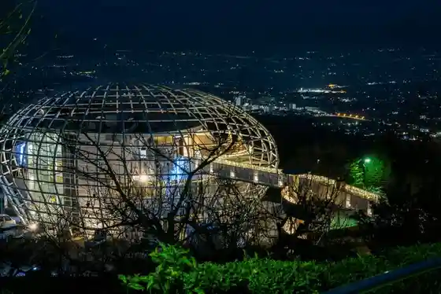
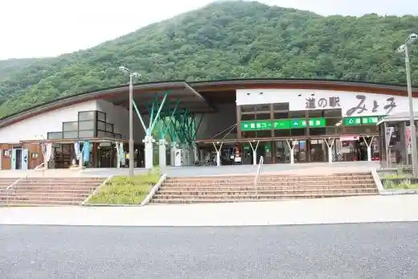
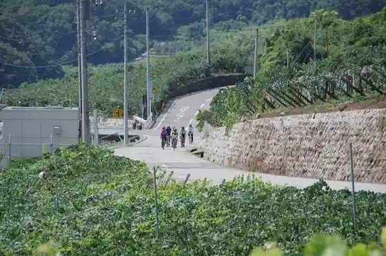
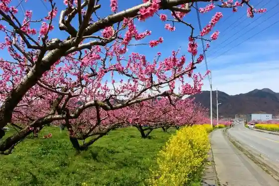

Otome Mizumi (Kon Kawa Dam)
Yamanashishi, Yamanashi · 0553-35-3140 · Official / source link
Usui Kawa Furutsu Park
Yamanashishi, Yamanashi · 0553-23-4101 · Official / source link

Roadside Station Mitomi
Yamanashishi, Yamanashi · 0553-39-2580 · Official / source link

Furutsu Line
Yamanashishi, Yamanashi · 0553-22-1111 · Official / source link

Yamanashishi Togenkyo
Yamanashishi, Yamanashi · 0553-22-1111 · Official / source link

Obi Na Yama
Yamanashishi, Yamanashi · 0553-22-1111 · Official / source link
Ishimori Yama
Yamanashishi, Yamanashi · 0553-22-1111 · Official / source link
Art Shop Message
Yamanashishi, Yamanashi · 0553-22-8811 · Official / source link
Kojin Yama Cherry Blossoms
Yamanashishi, Yamanashi · 0553-22-1111 · Official / source link
Kichijoji
Yamanashishi, Yamanashi · 0553-22-1111 · Official / source link
San Za Oka Farm
Yamanashishi, Yamanashi · 0553-35-2880 · Official / source link
Wakuwaku Kanko Village
Yamanashishi, Yamanashi · 080-1103-8897 · Official / source link
Ichigo Land
Yamanashishi, Yamanashi · 0553-23-5155 · Official / source link
Kokushigagaku
Yamanashishi, Yamanashi · 0553-22-1111 · Official / source link
Hafu Yama
Yamanashishi, Yamanashi · 0553-22-1111 · Official / source link
Keikan Yama
Yamanashishi, Yamanashi · 0553-22-1111 · Official / source link
Karisaka Mine
Yamanashishi, Yamanashi · 0553-22-1111 · Official / source link
Kurogane Yama
Yamanashishi, Yamanashi · 0553-22-1111 · Official / source link
Kentoku Yama
Yamanashishi, Yamanashi · 0553-22-1111 · Official / source link
Amemiya Tourist Farm
Yamanashishi, Yamanashi · 0553-35-2805 · Official / source link
Makioka Furutsu Center
Yamanashishi, Yamanashi · 0553-35-2288 · Official / source link
Marusei Farm
Yamanashishi, Yamanashi · 0553-23-0133 · Official / source link
Ko Rakuen
Yamanashishi, Yamanashi · 0553-35-2696 · Official / source link
Miyuki Nojo
Yamanashishi, Yamanashi · 0553-35-3223 · Official / source link
Kai Ya Nojo
Yamanashishi, Yamanashi · 0553-35-2258 · Official / source link
Jo Hisashi Sono
Yamanashishi, Yamanashi · 0553-35-3572 · Official / source link
Hagiwara Furutsu Farm
Yamanashishi, Yamanashi · 0553-23-0133 · Official / source link
to Gyararii Roppo Roku Otori Kama
Yamanashishi, Yamanashi · 0553-23-3932 · Official / source link
Kentoku Park
Yamanashishi, Yamanashi · 0553-22-1111 · Official / source link
Sai Kai Park
Yamanashishi, Yamanashi · 0553-22-1111 · Official / source link
Nishizawa Gorge / Nanatsu Kama Godan Falls
Yamanashishi, Yamanashi · 0553-22-1111 · Official / source link
Yamanashishi Tami Hall
Yamanashishi, Yamanashi · 0553-22-9611 · Official / source link
Yokomizo Seishi Kan
Yamanashishi, Yamanashi · 0553-21-8250 · Official / source link
Hiza Ritsu no Ten'o Sakura
Yamanashishi, Yamanashi · 0553-22-1111 · Official / source link
Otome Highlands
Yamanashishi, Yamanashi · 0553-22-1111 · Official / source link
Hotaru Village (Yamanashishi)
Yamanashishi, Yamanashi · 0553-23-1560 · Official / source link
Oi Mata Kubo Hachiman Shrine
Yamanashishi, Yamanashi · 0553-22-1111 · Official / source link
Ten Shrine
Yamanashishi, Yamanashi · 0553-22-1111 · Official / source link
Norikazu Gorge
Yamanashishi, Yamanashi · 0553-22-1111 · Official / source link
Mei Baku Kazuyuki Kama
Yamanashishi, Yamanashi · 0553-22-1111 · Official / source link
Manriki Park Manyo Forest
Yamanashishi, Yamanashi · 0553-23-1560 · Official / source link
Otsugatsuma no Shidarezakura
Yamanashishi, Yamanashi · 0553-22-1111 · Official / source link
Kobushigagaku
Yamanashishi, Yamanashi · 0553-22-1111 · Official / source link
Iijima Furutsu Kanko Sono
Yamanashishi, Yamanashi · 090-5169-5838 · Official / source link
Tajima Sono
Yamanashishi, Yamanashi · 0553-35-2294 · Official / source link
JA Furutsu Yamanashishi Furutsu Chokubai Tokoro
Yamanashishi, Yamanashi · 0553-23-3914 · Official / source link
Yamanashishi Chiiki Koryu Center Machi no Eki Yamanashi
Yamanashishi, Yamanashi · 0553-20-7010 · Official / source link
Yamanashi Naito Noen Pesukashoppu (PESCA-SHOP)
Yamanashishi, Yamanashi · 0553-39-9010 · Official / source link
Chokubai Tokoro
Yamanashishi, Yamanashi · Official / source link
Wagashi Shimizuya
Yamanashishi, Yamanashi · 0553-22-0201 · Official / source link
Mitake Doun Tera
Yamanashishi, Yamanashi · 0553-35-2381 · Official / source link
Otake Yama Naka Miyako Shrine
Yamanashishi, Yamanashi · 0553-39-2825 · Official / source link
Sando no Ume / Kokuho Suzushiro Tera
Yamanashishi, Yamanashi · 0553-22-0829 · Official / source link
Konara Yama
Yamanashishi, Yamanashi · 0553-22-1111 · Official / source link
Hirose Mizumi / Hirose Dam
Yamanashishi, Yamanashi · 0553-39-2411 · Official / source link
Sakurambo Kari Miyamoto Farm
Yamanashishi, Yamanashi · 090-4597-1371 · Official / source link
Oishi Yama / Oishi Shrine
Yamanashishi, Yamanashi · 0553-22-1111 · Official / source link
Dai Chi Toge / Yume no Garden
Yamanashishi, Yamanashi · 0553-22-1111 · Official / source link
Usui Park
Yamanashishi, Yamanashi · 0553-39-2121 · Official / source link
Hana Kage no Sato Makioka Roadside Station
Yamanashishi, Yamanashi · 0553-35-4780 · Official / source link
Jambo Tsuruta Sono
Yamanashishi, Yamanashi · 0553-35-2188 · Official / source link
Kanteiina Hiro
Yamanashishi, Yamanashi · 0553-35-5555 · Official / source link
Kanai Jozo Ba /CANEY WINE
Yamanashishi, Yamanashi · 0553-22-0148 · Official / source link
Higashi Shin Yoshu
Yamanashishi, Yamanashi · 0553-22-5681 · Official / source link
Yamanashishi Hakko Kogyo
Yamanashishi, Yamanashi · 0553-23-2462 · Official / source link
Sanyan Jozo
Yamanashishi, Yamanashi · 0553-35-2108 · Official / source link
Santonejuwain
Yamanashishi, Yamanashi · 0553-22-1511 · Official / source link
Hikawa Budo Sake Jozo
Yamanashishi, Yamanashi · 0553-22-1722 · Official / source link
Tsuruya Jozo
Yamanashishi, Yamanashi · 0553-20-1772 · Official / source link
Asahi Yoshu Soreiyuwain
Yamanashishi, Yamanashi · 0553-22-2236 · Official / source link
Otome Mizumi Lookout [ Kon Kawa Damu ]
Yamanashishi, Yamanashi · 0553-35-3140 · Official / source link
JA Furutsu Yamanashishi Nochi Yashiki Shisho Goyashiki Kajitsu Bu Chokubai Tokoro
Yamanashishi, Yamanashi · 0553-22-2542 · Official / source link
Mukaiyama Furutsu Farm
Yamanashishi, Yamanashi · 090-1534-2106 · Official / source link
Sakurambo Kari Yamaguchi Farm
Yamanashishi, Yamanashi · 0553-22-6659 · Official / source link
Furuya Farm
Yamanashishi, Yamanashi · 0553-35-2468 · Official / source link
Takei Sono
Yamanashishi, Yamanashi · 0553-35-2700 · Official / source link
Shuzo Kai / Yoro Shuzo
Yamanashishi, Yamanashi · 0553-22-0047 · Official / source link